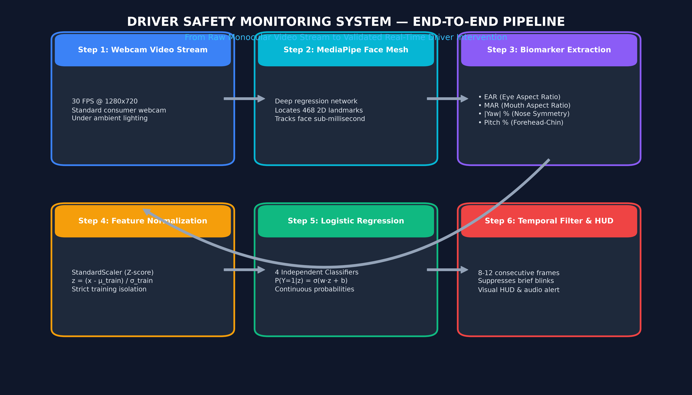
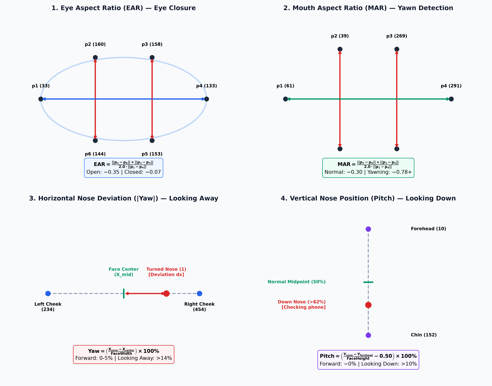
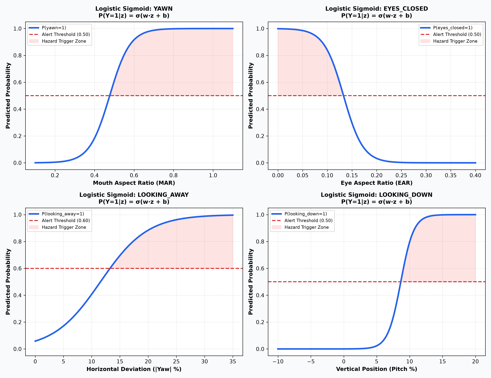

Real-time AI system detecting driver micro-sleeps, prolonged eye closures, yawning, and visual distractions (looking away or looking down at phones) directly via your webcam.
AUTOVISION monitors 4 physiological indicators to guarantee safe driving conditions.
Computes Eye Aspect Ratio (EAR) across 12 landmarks. Persistent closure (> 0.33s) triggers an urgent alarm.
Measures Mouth Aspect Ratio (MAR) vertical oral separation against lip width to capture involuntary yawn cycles.
Evaluates 2D horizontal nose symmetry ratio (|Yaw|). Tuned with 100% precision to eliminate mirror check false alarms.
Monitors vertical nose proportion relative to chin and eye midpoints to detect texting or looking down into laps.
Engineered for full mathematical explainability, edge speed, and invariant landmark geometry.



Evaluated on 3,534 labeled validation frames using an 80/20 stratified split.
| Hazard State | Test Accuracy | Precision | Recall | F1-Score | Optimal Threshold τ |
|---|---|---|---|---|---|
| Yawn Detection | 98.25% | 98.44% | 98.25% | 0.983 | 0.50 |
| Eyes Closed (Drowsy) | 98.64% | 98.65% | 98.64% | 0.986 | 0.50 |
| Looking Away | 88.28% | 100.00% | 81.25% | 0.897 | 0.60 |
| Looking Down (Phone) | 99.46% | 99.47% | 99.46% | 0.995 | 0.50 |